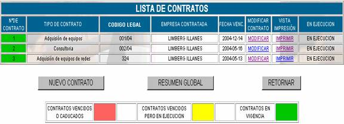
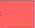
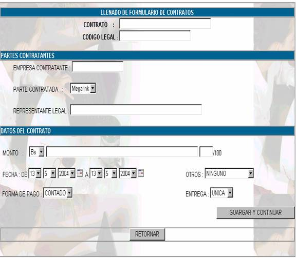
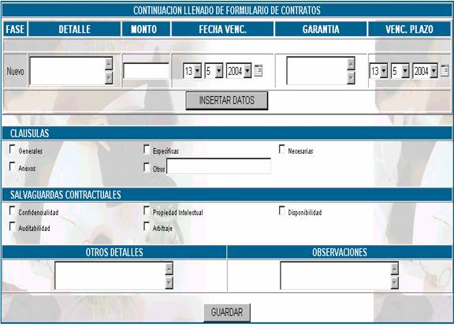
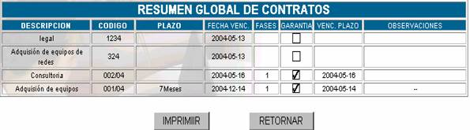

CONTRATOS
Esta opción muestra como pantalla principal:

N° de Contrato;
indica con que número de contrato estamos trabajando y según el color que tenga nos indica lo siguiente :Contrato vencido o caducado 
Contrato vencido pero en ejecución
Contratos en Vigencia
Tipo de contrato; indica con que clase de contrato estamos trabajando, pudiendo ser este un contrato de bienes, servicios, mantenimiento, informático, etc.
Código Legal; como se indica en el manual de procedimientos, se debe asignar un numero de código para cada contrato, para un mejor control de la numeración, esta debe ser correlativa, tener por lo menos tres dígitos seguido de un slash y dos dígitos para identificar la gestión, como por ejemplo: "CODIGO: 001/04". Que nos indica que es el contrato No. 001, realizado en la gestión 2004.
Empresa Contratante; indica el nombre de la empresa que hizo el contrato.
Fecha Venc; indica la fecha en la que el contrato se vence
Modificar Contrato; haciendo click en la opción modificar de este campo usted podrá visualizar la pantallla de modificación y realizar los cambios que sean necesarios sobre el contrato escogido
Vista de Impresión; todos los contratos deben ser impresos en papel que cumpla con las siguientes condiciones:
Esta opción permite imprimir la ficha legal, con los márgenes correspondientes y haciendo caso de la definición del formato fuente.
En Ejecución; cuando el contrato no se encuentre aún en la fase de ejecución el vinculo en este campo aparecerá como
Ejecutar, de lo contrario aparecerá como QUITAR EJECUCIÓNSi es que los contratos se encuentran caducados, entonces se puede quitar la ejecución, si es que los contratos no han caducado aún entonces la parte En Ejecución se puede quitar.
Nuevo Contrato
Al hacer click sobre este botón usted podrá, como su nombre lo dice, crear un nuevo contrato, llenado los datos de la siguiente pantalla:

Contrato;
colocar la designación o nombre del contrato.Código Legal;
se debe asignar un numero de código para cada contratoEmpresa Contratante;
es el nombre del cliente.Parte Contratada
; es el nombre del proveedor.Representante Legal;
anota la contraparte del contrato; especificando nombre y apellido en base a un poder especial que acredite ser representante legal.Monto;
escoger si es en Bolivianos o Dólares, aclarando a continuación el monto literalmente.Fecha;
se debe llenar desde cuando entra en vigencia el contrato, hasta la fecha de su conclusión.Otros;
escoger si el contrato tiene Reconocimiento de Firmas o ha sido Protocolizado ante un Notario de Fe Pública.Forma de Pago;
de igual manera, escoger si el pago ha sido al contado o es a Crédito.Entrega;
finalmente escoger el campo que corresponda si la entrega del bien o servicio es única o se la hará por fases.En caso de hacerse la entrega del bien o servicio por fases, llenar la parte donde dice detalle monto fecha de vencimiento garantía y vencimiento del plazo, en la siguiente pantalla.

La parte de fases solo será posible llenar en caso de que la elección de la anterior pantalla en el campo entrega, sea por fases
Cláusulas;
a continuación, para un mejor control del contenido del contrato, clickear si el contrato contiene las cláusulas generales, específicas, necesarias, otros (Véase manual de procedimientos de contratos de tecnologia)Salvaguardas Contractuales;
a fin de controlar las salvaguardas contractuales, tickear las que correspondan y contenga el contrato, según sea el caso.Otros Detalles;
si existieran algunos otros detalles que se considere tomarlos en cuenta por la importancia que estos revistan, especificarlos en esta casilla.Observaciones;
en caso de existir alguna observación sobre todo respecto al control o cumplimiento de alguna de las fases o alguna falencia del contrato, especificar brevemente en esta casilla.Reunión Global de Contratos.
Al hacer click sobre este botón Usted podrá visualizar la siguiente pantalla:

Donde encontrará los siguientes campos:
Descripción;
especifica el tipo de contrato, en base a la clasificación de contratos.Código;
en el que señala el numero de código asignado en el encabezado de la Ficha Legal.Plazo;
señala en esta casilla el tiempo de duración del contrato.Fecha Venc;
fecha de Vencimiento del contrato, dato que nos ayudara a tener en cuenta la fecha de cumplimiento del contrato para su debido control.Fases;
especifica en cuantas fases se realiza en contrato.Garantía;
en caso de existir alguna garantía establecida en el contrato está marcada como un check.Venc. Plazo;
especifica la fecha de vencimiento de la garantía ofrecida por la parte contratada.Observaciones;
especifica, si se hizo referencia en algún punto.Con el botón retornar podrá volver al listado de contratos.